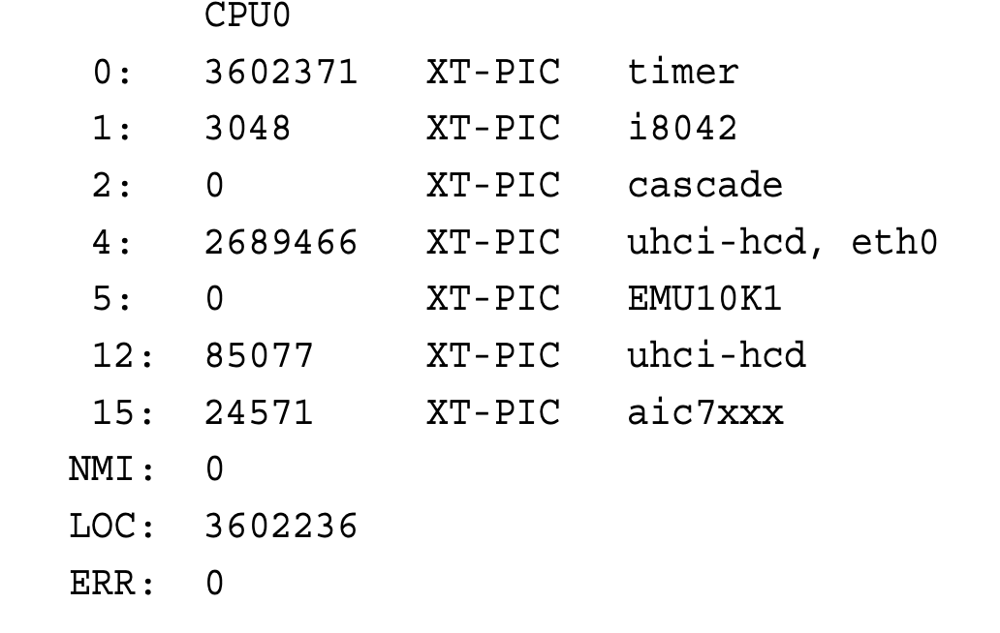
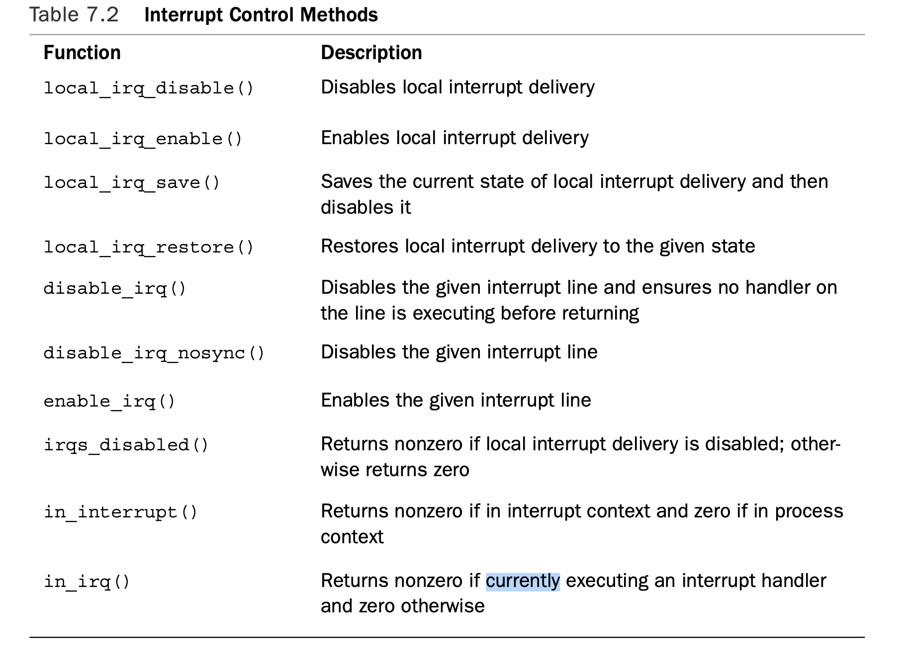

硬件中断
硬件中断是外部设备通过给cpu的中断引脚发送电信号，通知cpu有外部事件需要处理。cpu检查到中断引脚被set之后通知操作系统处理中断。硬件中断的产生异步于cpu执行流，中断随时会发生，因此，cpu执行流会随时被打断去处理中断。
软件中断
软件中断又叫异常，是由于执行指令时遇到程序错误，比如除以0，或者遇到异常情况，比如page fault，需要跳转到别的指令流去处理异常。
系统调用也是软件中断，当用户程序需要调用系统调用时，需要陷入内核，通过int 0x80软中断指令。cpu切换到内核态，执行128中断向量对应的处理例程，这个例程通常负责保存寄存器状态，保存系统调用的参数，系统调用号到中断处理的内核栈上，然后跳转到系统调用号对应的系统调用函数处理。
异常的处理如果成功后，cpu会重复执行产生异常的指令。
中断控制器
外设连接到中断控制器的输入引脚IRQ line，每个IRQ line对应一个IRQ number .中断控制器multiplex多个外设，管理和控制多个外设的中断请求。在复杂的计算机系统中，可能会有多个硬件设备能够产生中断，中断控制器的作用是协调这些中断，确保它们能够有序地被处理。 中断控制器的主要功能包括：
中断优先级管理：中断控制器确定哪些中断请求具有更高的优先级，并按照优先级顺序将它们传递给 CPU。这样，重要的中断请求可以尽快得到处理，而不会因为较低优先级的中断而延迟。
中断请求的仲裁：当多个中断请求同时发生时，中断控制器会决定哪个中断将被优先处理。在某些情况下，中断控制器可能会基于特定的仲裁策略来决定中断的顺序。
中断屏蔽：中断控制器允许屏蔽特定的中断。这允许操作系统在处理关键任务时临时禁用某些中断，以避免不必要的干扰。中断控制器屏蔽的中断，对所有cpu都生效
中断向量的映射：在 x86 架构中，中断控制器（如可编程中断控制器（PIC）或高级可编程中断控制器（APIC））负责将中断请求号映射到中断向量。中断向量是 CPU 用于在中断向量表中查找中断服务例程（ISR）的索引。每个中断请求号(IRQ number)对应一个中断向量。多个外设可共享同一个IRQ number,同时，多个中断向量也可对应到同一个ISR.
中断重定向：在某些系统中，中断控制器可以将中断重定向到不同的 CPU核心，以便实现负载均衡和优化性能。
在传统的 PC 架构中，中断控制器通常是一个或多个可编程中断控制器（PICs）。在多核系统中，每个核心通常有一个高级可编程中断控制器（APIC），它负责处理该核心的中断请求。
外设连接到中断控制器的IRQ line（interrupt request line），每个IRQ line对应一个IRQ number 。当有事件发生时，通过IRQ line给中断控制器发送信号，中断控制器将IRQ line 对应的IRQ number 转换为中断向量。在较老的系统中，PIC 使用一个固定的映射表将 IRQ number转换为中断向量。在较新的系统中，APIC 允许更灵活的中断向量分配。一旦中断控制器决定触发一个中断，它会将中断向量发送给 CPU。在 x86 架构中，这个向量通常是通过数据总线发送的。
中断向量与中断向量表
中断向量是cpu用来从中断向量表中查找对应的处理例程的索引。在 x86 架构中，中断向量是一个从 0 到 255 的整数，其中某些值被保留用于系统定义的异常，如除以零错误、页错误等，而其他值可以用于可编程的中断，如来自外设的中断，其中断处理通常在外设驱动程序中定义并注册。
中断向量表，也称为中断描述符表（Interrupt Descriptor Table, IDT），存储了与每个中断向量相关联的中断服务例程（ISR）的地址。当发生中断时，CPU 使用中断向量作为索引在 IDT 中查找对应的中断描述符，然后根据描述符中的信息跳转到相应的 ISR 去处理中断。
中断处理例程
中断向量表（IDT）中的中断向量对应的处理例程通常是内核中预先定义的入口地址。在 x86 架构中，这些入口地址通常定义在 arch/x86/kernel/entry.S 文件中，包含了各种中断和异常的处理例程的入口点。当发生中断或异常时，CPU 会根据中断向量在 IDT 中查找对应的中断描述符，然后根据描述符中的信息跳转到相应的处理例程。这些处理例程负责保存必要的寄存器状态、设置内核栈、调用更高层次的中断处理函数。
部分例程有如下
ENTRY(system_call)
ENTRY(common_interrupt)
KPROBE_ENTRY(page_fault)
ENTRY(overflow)
ENTRY(invalid_op)
ENTRY(divide_error)
其中ENTRY(common_interrupt)是大部分外设中断处理的入口地址。入口处的代码将CPU寄存器的值保存到中断处理的栈上，然后跳转到do_IRQ程序执行。
interrupt handlers
Register an Interrupt Handler
每个外设的中断处理函数通常定义在该设备的设备驱动程序中。在驱动初始化时注册到内核。 linux提供request_irq函数注册interrupt handler,将其与某个中断号关联，如下
int request_irq(unsigned int irq, irq_handler_t handler, unsigned long flags,
const char *name, void *dev)
irq是要分配的中断号，对于某些传统的设备，比如system timer,keyboard,这个值是写死的，对于大部分其他设备，这个值是事先动态获取的，本质上是中断控制器分配的。
handler是要执行的中断处理函数，其签名如下
typedef irqreturn_t (*irq_handler_t)(int,void*)
flags要么是0，要么是以下flag的组合，这些flag定义在
- IRQF_DISABLED:当这个标志被设置时，表示在执行这个中断时，所有local中断都是disabled.（local interrupt,仅该cpu的中断处理被disable）如果没有设置这个标志，只有本irq number的中断被disable（在所有cpu上）,其他中断是可以产生的。
- IRQF_SAMPLE_RANDOM:This flag specifies that interrupts generated by this device should contribute to the kernel entropy pool.The kernel entropy pool provides truly random numbers derived from various random events. If this flag is specified, the timing of interrupts from this device are fed to the pool as entropy. Do not set this if your device issues interrupts at a predictable rate (for example, the system timer) or can be influenced by external attackers (for example, a networking device). On the other hand, most other hardware generates interrupts at nondeterministic times and is, therefore, a good source of entropy.
- IRQF_TIMER: 这个标志表示该handler是system timer interrupt的handler
- IRQF_SHARED:这个标志表示该irq line可以被多个interrupt handler共享，每个共享该line的handler都需要设置这个标志，否则该line只能属于一个handler
name一般为设备的名字，比如如果是keyboard,则name就是"keyboard"
最后的dev指针，是用于共享的interrupt line.当一个interrupt handler 被free时(比如卸载某个驱动程序，需要unregister 其相关的interrupt handler),需要调用free_irq(unsigned int irq, void *dev)，这个dev就是在注册时，如果是共享的interrupt line,所传递的dev.这样内核才能知道对于shard interrupt line,去卸载哪个interrupt handler.如果该line不是共享的，可以传NULL。但对于现在大部分的外设而言，都是共享的。同时，这个参数在handler被调用时，会传给handler的第二个参数。第一个参数肯定是interrupt number. 如果是共享的line,通常的做法是传递驱动程序中该设备的device structure的指针，这个指针对每个设备而言是唯一的，同时在handler被调用时可以获取到这个指针也可能很有用。
该函数注册成功返回0，nonzero indicate error.通常的错误是-EBUSY，表示该line已经被占有，要么你，要么别人在注册时，没有设置IRQF_SHARED标志。
request_irq可能会阻塞，所以不能在interrupt context，或者别的不能睡眠的上下文中调用该函数。request_irq在注册handler时，会在/proc/irq下创建目录。proc_mkdir()创建procfs 的new entry,该函数会调用proc_create(),proc_create()会调用kmalloc()分配内存，这个函数可能会阻塞。
Freeing an Interrupt Handler
当驱动程序卸载时，需要unregister interrupt handler, potentially disable the interrupt line. linux kernel 提供了以下函数供调用
void free_irq(unsigned int irq, void *dev)
如果interrupt line不是共享的，这个函数unregister the handler and disables the line。如果line是共享的，只unregister dev指向的interrupt handler,只有当最后一个handler也被free之后，这个line才被disabled.
free_irq函数只能在process context下被调用。
writing an interrupt handler
假设我们有一个interrupt handler的声明如下
static irqreturn_t intr_handler(int irq, void* dev)
参数不需要再说明了，返回irqreturn_t的类型如下
/**
* enum irqreturn
* @IRQ_NONE interrupt was not from this device
* @IRQ_HANDLED interrupt was handled by this device
* @IRQ_WAKE_THREAD handler requests to wake the handler thread
*/
enum irqreturn {
IRQ_NONE,
IRQ_HANDLED,
IRQ_WAKE_THREAD,
};
typedef enum irqreturn irqreturn_t;
#define IRQ_RETVAL(x) ((x) != IRQ_NONE)
IRQ_WAKE_THREAD是一个特殊的返回值，它告诉内核中断处理函数已经快速地处理了中断，并且需要唤醒一个线程来执行更详细的中断处理工作。这个线程通常是中断处理函数的bottom half。
interrupt handler通常声明为static
避免命名冲突：通过将中断处理函数声明为 static，可以确保它们的名字不会与其他文件中的全局函数名或全局变量名冲突。这对于模块化的设备驱动代码来说是非常重要的。
封装性：中断处理函数通常是硬件相关的，并且与特定的外设驱动紧密相关。将它们声明为 static 可以将它们的实现细节隐藏在驱动代码内部，只暴露必要的接口给其他部分
注册机制：现代操作系统中，中断处理函数通常不会直接被内核调用，而是通过注册机制，在驱动初始化时，驱动会将自己的中断处理函数注册到内核的中断管理器中。一旦注册，内核会在发生相应中断时调用这个函数，但这是通过函数指针来实现的，而不是通过函数名。因此，中断处理函数不需要全局可见。
例如我们有如下中断
static irqreturn_t my_irq_handler(int irq, void *dev_id) {
// 中断处理代码
return IRQ_HANDLED;
}
在设备驱动初始化时，会调用request_irq注册该中断
int my_driver_init(void) {
//...
int irq = /* 获取中断号 */;
if (request_irq(irq, my_irq_handler, 0, "my_device", NULL)) {
// 注册失败的处理
return -EINVAL;
}
// 其他初始化代码
return 0;
}
Interrupt Context
interrupt handlers运行在interrupt context中，不同于process context,这种context不与某个进程相关联。 interrupt context又叫做atomic context,在这种context下执行的routine 不能阻塞。 interrupt handler会随时被执行，它可能中断了一个关键task,所以interrupt handler 需要执行的很快，好快速恢复原先被打断的执行流。而中断的处理，最起码需要确认中断的接受，好让外设继续工作。对于某些中断请求，比如网卡中断，需要处理到达网卡的数据，将网络数据包从网卡拷贝到内存，处理包，将其push到相应的协议栈或者进程，显然，这些工作不可能快速完成。因此，对中断的处理分成了top halves 和 bottom halves。复杂的处理过程应该被delay 到bottom halves中去执行。 interrupt handler 执行时使用的栈空间是可配置的。 通常interrupt handler没有自己的栈空间，它共享之前被打断的进程的内核栈空间。内核栈通常是2pages,在32位机上是8KB,在64位机上是16KB。因为栈空间有限，在interrupt handler 中使用栈空间时应该谨慎。 在2.6版本中，interrupt handler的栈空间可配置成另外一种形式，这种配置使每个进程内核栈的大小从2pages 降低到1 page, 之所以选择可以降低proces kernel stack的大小，是因为如果每个process都需要2pages contiguous， nonswappable kernel memory,这个内存消耗的有点多。降低了process kernel stack的大小之后，interrupt handler就不再共享process kernel stack,而是给每个processor专门分配1 page空间用于interrupt handler stack. 在实现interupt handler时，不需要关注interrupt handler可用的栈是怎样配置的，记住尽可能少的使用栈空间就行了。
Top Halves versus Bottom Halves
中断的处理分成了2部分，interrupt handler是top halves。top halves立即执行，需要执行的很快，只处理需要紧急立刻执行的工作,比如确认中断的接受，reset hardware。而bottom halves的工作是可以被推迟到未来某个方便的时间执行。同时，bottom halves执行时，所有的中断都是可产生的，（with all interrupts enabled）。而interrupt handler执行时，其他中断可产生，而本interrupt line 对应的中断是disabled.(这是默认情况，本中断在所有cpu上都被disable,其他中断不受影响)
还是以网卡中断为例，当网卡收到网络数据包后，它立即给cpu发中断，内核调用网卡驱动注册的中断处理函数，该处理函数只会处理重要的紧急的任务，对网卡而言，是确认中断的接受，将网卡上的数据拷贝到内存，并重置网卡使其可以继续接受数据。这其中最重要的是拷贝网卡数据到内存，因为网卡的数据缓存空间相比内存是很小的，如果不即时拷贝出来，网卡缓存满了之后就会无法再接受数据导致丢包。后续对这些包的处理就可以放到bottom halves中执行。 当网卡top halves执行完之后，返回之前被中断的执行流继续执行。
reentrancy and interrupt handlers
当一个中断处理在被执行时，相应的line上的中断在所有cpu上都是被disable的，因此在中断处理函数中不需要处理并发问题，中断处理函数不需要是可重入的。而其他line上的中断通常不受影响，除非IRQF_DISABLED标志被设置了，这时候本地cpu的中断被关闭了
Shared Handlers
Shared Handlers 与NonShared Handlers的区别如下
- IRQF_SHARED flag must be set
- dev 参数必须能区分是哪个设备。通常指向该设备的device struct。在shard handlers注册时该参数不能传NULL
- interrupt handler 必须能区分是否是自己的设备发送的中断请求。当kernel在处理一个irq对应的终端请求时，它会顺序调用在该irq上注册的中断句柄。所以handler需要能够区分该中断是否是自己设备发出的,如果不是，需要快速退出中断处理函数。这需要hardware device have a status register or similar mechanism that the handler can check. Most hardware does indeed have such a feature.
中断号（Interrupt Number）和中断向量（Interrupt Vector）
中断号与外设连接到中断控制器的IRQ line相关，典型的个人计算机系统有16个标准的IRQ线，编号从0到15。这些IRQ线可以连接到各种硬件设备，如硬盘驱动器、网络适配器和声卡等。每个IRQ线通常分配有一个唯一的中断号，以便系统能够区分不同的中断源。 高级的PCI总线控制器支持级联的中断请求，允许多个PCI设备共享同一个IRQ线，也就是公用同一个中断号。在这种情况下的中断管理通常由硬件和操作系统协同处理，确保每个设备的中断能够被正确识别和处理。在设备驱动注册该设备的中断处理例程之前，通常需要先获取中断号。对于传统的设备，比如system timer，keyboard，其中断号是固定的，而对于大部分其他设备而言，中断号是动态获取的。也就是由中断控制器分配的。
中断向量是 CPU 用于在中断向量表中查找中断服务例程（ISR）的索引。每个中断号对应一个中断向量。中断控制器维护中断号和中断向量的映射。当条IRQ LINE上发中断请求后，中断控制器将中断向量通过数据线送给cpu. 内核也会维护一个中断向量到中断号的映射数组。在内核中断处理例程中，通过内核栈中保存的中断向量，获取对应的中断号，然后使用这个中断号来调用相应的外设注册的中断处理函数。
多个外设可共享同一个中断号，也就是共用同一条IRQ line. 而不同的中断向量，可能对应同一个ISR, 比如都是ENTRY(common_interrupt),这是大部分外设中断处理的入口地址
do_IRQ()
x86 架构下，ENTRY(common_interrupt)的入口代码如下
ENTRY(common_interrupt)
XCPT_FRAME
interrupt do_IRQ
XCPT_FRAME: 设置中断处理的栈，保存当前的执行上下文到栈上。 然后跳转到do_IRQ():
asmlinkage unsigned int do_IRQ(struct pt_regs *regs)
{
//The pt_regs structure contains the state of the processor registers when the interrupt occurred. This state is saved so that it can be restored later.
struct pt_regs *old_regs = set_irq_regs(regs);
//The vector is extracted from the orig_rax register.
unsigned vector = ~regs->orig_rax;
unsigned irq;
exit_idle();
irq_enter();
//The vector_irq array is used to map the interrupt vector to an IRQ number. This mapping is specific to the x86_64 architecture and is established during the system’s boot process.
//vector_irq 是一个 per CPU variable ，这意味着每个CPU都有自己的 vector_irq 数组副本，这有助于减少多CPU系统中的锁竞争。__get_cpu_var(vector_irq) 宏用于获取当前CPU的 vector_irq 数组的引用。然后，通过索引 vector 来获取数组中对应的中断号 irq。
irq = __get_cpu_var(vector_irq)[vector];
#ifdef CONFIG_DEBUG_STACKOVERFLOW
stack_overflow_check(regs);
#endif
if (likely(irq < NR_IRQS))
//If the IRQ number is valid (likely(irq < NR_IRQS)), the generic_handle_irq function is called to handle the interrupt. This function looks up the IRQ’s handler and calls it.
generic_handle_irq(irq);
else {
if (!disable_apic)
ack_APIC_irq();
if (printk_ratelimit())
printk(KERN_EMERG "%s: %d.%d No irq handler for vector\n",
__func__, smp_processor_id(), vector);
}
irq_exit();
//the saved register state is restored
set_irq_regs(old_regs);
return 1;
}
do_IRQ先获取irq number,然后调用generic_handle_irq(),依序执行注册的handlers
do_IRQ()退出到entry point,开始执行 ret_from_intr过程。 ret_from_intr会检查是否需要schedule,如果need_resched被设置，并且preempt_count为0，则会调用schedule。如果调用了schedule后，等到schedule返回，再恢复之前执行的上下文。返回被中断的执行流继续执行。
/proc/interrupts (实在不想翻译了。。)
Procfs is a virtual filesystem that exists only in kernel memory and is typically mounted at /proc. Reading or writing files in procfs invokes kernel functions that simulate reading or writing from a real file.A relevant example is the /proc/interrupts file, which is populated with statistics related to interrupts on the system. Here is sample output from a uniprocessor PC:

The first column is the interrupt line. On this system, interrupts numbered 0–2, 4, 5, 12, and 15 are present. Handlers are not installed on lines not displayed.The second column is a counter of the number of interrupts received.A column is present for each processor on the system, but this machine has only one processor. As you can see, the timer interrupt has received 3,602,371 interrupts,whereas the sound card (EMU10K1) has received none (which is an indication that it has not been used since the machine booted).The third column is the interrupt controller handling this interrupt. XT-PIC corresponds to the standard PC programmable interrupt controller. On systems with an I/O APIC, most interrupts would list IO-APIC-level or IO-APIC-edge as their interrupt controller. Finally, the last column is the device associated with this interrupt.This name is supplied by the devname parameter to request_irq(), as discussed previously. If the interrupt is shared, as is the case with interrupt number 4 in this example, all the devices registered on the interrupt line are listed. For the curious, procfs code is located primarily in fs/proc.The function that provides /proc/interrupts is, not surprisingly, architecture-dependent and named show_interrupts(). As an exercise, after reading Chapter 11 can you tell how long the system has been up (in terms of HZ), knowing the number of timer interrupts that have occurred? 3602371/HZ secondsInterrupt Control
linux提供了一系列控制中断状态的函数，如下

这些函数可以disable the interrupt system for the current processor or mask out an interrupt line for the entire machine. 这些函数是architecture-dependent。 之所以需要这些函数，是为了保证同步，避免竞争。disable local interrupts 可以确保本地执行不会被中断，避免中断例程访问临界区。而对于smp系统，通常除了要disable local interrupts, 也要锁机制来避免别的处理器的并发访问。 local_irq_disable()和local_irq_enable()关闭和打开本地处理器的中断处理。实现是architecture-dependent，对于x86处理器而言，通常就是cli指令和sti指令，clear and set the allow interrupts flag。如果并不清楚之前中断的状态，在将中断关闭之后，需要将中断恢复成之前的状态，可以调用如下代码
unsigned long flags;
local_irq_save(flags); //将中断之前的状态保存到flags中，并关闭中断。
//...
local_irq_restore(flags);
void disable_irq(unsigned int irq);
void disable_irq_nosync(unsigned int irq);
void enable_irq(unsigned int irq);
void synchronize_irq(unsigned int irq);
前两个函数disable a give interrupt line in the interrupt controller. This disable delivery of the given interrupts to all processors in the system. disable_irq()，如果有当前该line上handlers在执行的话，会等到handlers退出再返回。而disable_irq_nosync不会等待。 synchronize_irq，如果有该line上handler在执行，会等待handler退出再返回。
in_interrupt():如果kernel在执行interrupt handler或者 bottom half handler，都会返回nonzero. in_irq(): kernel只在执行interrupt handler时才会返回nonzero